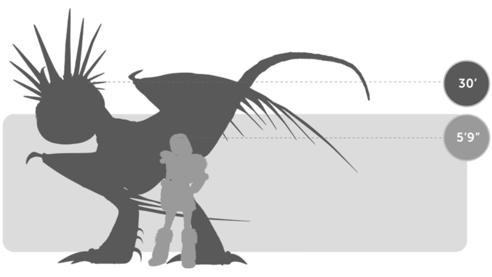
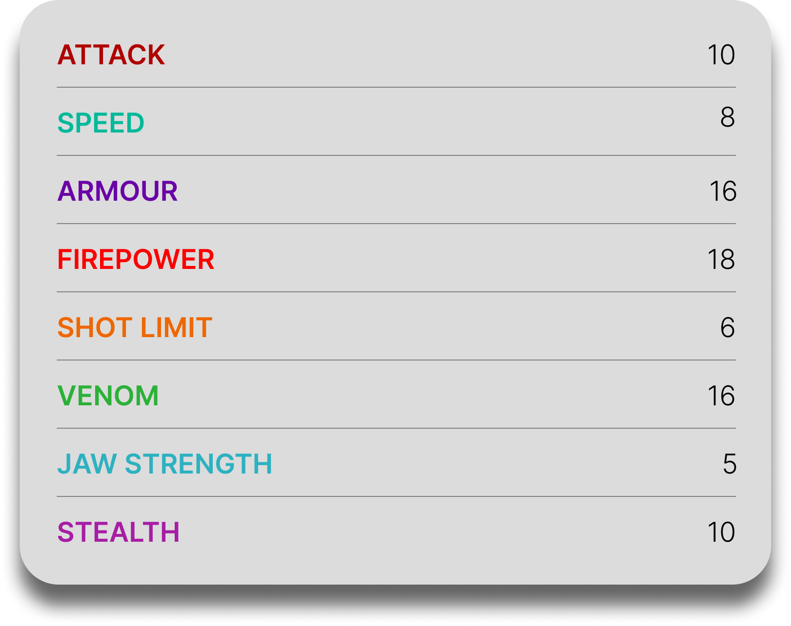

Deadly Nadder
General Overview
The Deadly Nadder is a medium-sized dragon belonging to the Tracker Class. Known as one of the most beautiful yet dangerous dragons in the archipelago, it combines elegance with deadly precision. Although not the largest or strongest dragon, it is feared for its extremely hot fire, venomous spines, and remarkable tracking abilities, making it both a powerful attacker and an exceptional hunter.


Physical Appearance
- Body & Color: It has a vibrant, bird-like body often seen in bright blue, yellow, and orange tones, with a lighter underbelly and patterned wings.
- Head & Face: Its head features a curved nasal horn and a crown of sharp spines, along with small but keen eyes.
- Appendages: It is bipedal with strong legs and winged forelimbs, giving it both stability on land and agility in the air.
- Wings & Tail: Its wings are broad and powerful, while its tail is covered in sharp, venomous spines that can be launched as projectiles.
Abilities and Combat
- Magnesium Fire: It breathes extremely hot fire capable of melting metal and incinerating targets almost instantly.
- Spine Shot: It can fire its tail spines with incredible speed and accuracy, acting like natural projectiles.
- Venomous Spikes: Its spines contain venom, adding an additional layer of danger to its attacks.
- Keen Sense of Smell: It relies heavily on its sense of smell to track prey, compensating for a blind spot directly in front of its nose.
- Agility and Speed: It is fast, agile, and capable of sustained flight, making it difficult to catch or outmaneuver.
- Long-Range Combat: It prefers to attack from a distance, launching fire and spines while staying out of reach.
Behavior and Personality
- Intelligence: It is highly intelligent and capable of learning commands and forming strong bonds with riders.
- Temperament: Deadly Nadders are vain, proud, and often aggressive, especially when challenged or provoked.
- Behavior: They constantly groom themselves, showing a strong sense of vanity and awareness of their own beauty.
- Social Traits: They can travel and hunt in groups, making them more dangerous in coordinated attacks.
- Diet: Their known diet includes fish, chicken, and occasionally berries.